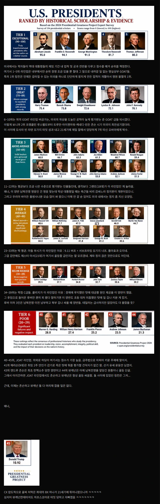
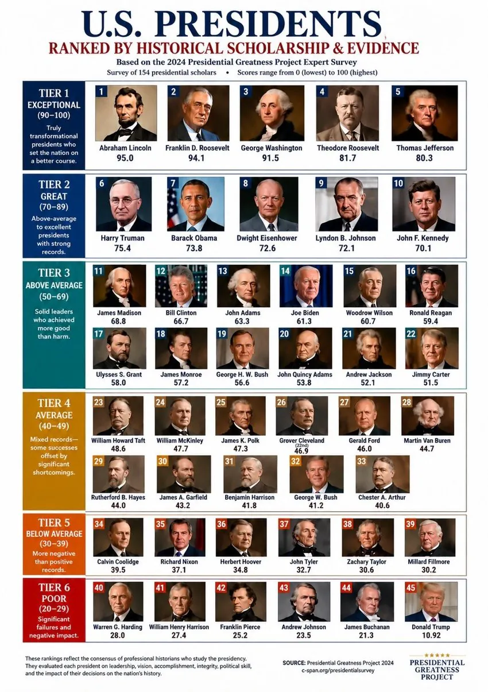

(원본)
비록 미국에서는 꼴찌지만 수상할 정도로 한국내 추종자는 많은 트럼프 대통령님
그립진 않읍니다……


(원본)
비록 미국에서는 꼴찌지만 수상할 정도로 한국내 추종자는 많은 트럼프 대통령님
그립진 않읍니다……
오바마는 2008년 서브 프라임 모기지발 금융위기, 2012년 유럽발 재정위기 다 해결했고
오사마 빈 라덴도 잡고, 중국이 치고 올라오는거 잘 막아냈고, 전세계 외교도 잘해서 다 오바마 편으로 만들었지만
PC주의를 ㅈㄴ 키우고 괜히 부자의 심심풀이에 불 지펴서
트럼프가 대통령을, 그것도 두 번이나 하게 만드는 패착을 저질러서 티어2가 맞음 ㅋㅋㅋㅋㅋ
정확하다
트럼프에 점수가 붙어있네 ㅋㅋㅋㅋ
트루먼 Top5 안에 안든건 아쉽네 내마음엔 1등인데 시어도어 루즈벨트가 인기가 많긴하네...
아마 냉전 고착화랑 핵 사용 윤리문제 이거 때문에 점수 낮게 준 사람들 있어서 그런듯
근데 오바마가 왜 7등임? 진짜 모름...
글로벌금융위기 극복?
진짜 뷰캐넌한테 따인건 병신이 맞다 ㅋㅋㅋㅋㅋ
꼴지가 21점인데 그걸 10점으로 따돌림 이정도면 재능이다 ㅋㅋㅋㅋ
가필드를 Average에 놓네… 총맞아 죽은게 업적인 수준인거같은데 좀 웃기군
아니면 죽은게 업적으로도 못들어가는넘들이 below Average인가…
ㄹㅇ 가만히 있으면 중간이라도 간다는걸 반영한걸지도?
근데 병신들이 저런새끼를 두번 뽑음?
도람푸 십새 이제 이지랄한다
"45번째 가장 위대한 대통령!
11점 만점에 10.92를 받은 최고의 평가!"
트럼프 이거 보고 존나 긁혔더만ㅋㅋㅋㅋㅋㅋㅋㅋ
X에 저 게시물 태그하는 사람 족족 차단시킴ㅋㅋㅋㅋㅋ